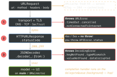

ios-swift · folio
In one line: URLSession moves bytes; you judge them: it throws only on
transport failure — a 404/500 arrives as success, so check the
status, then decode. Three layers, three error types, and UI back on the
main thread.
Download PDF Print view LaTeX source

How it works
- URLRequest:
url,httpMethod,setValue(_:forHTTPHeaderField:),httpBody,timeoutInterval,cachePolicy. - Session:
URLSession.shared(no delegate) orURLSession(configuration:delegate:delegateQueue:). Configs:.default(disk cache, cookies) ·.ephemeral(memory only) ·.background(withIdentifier:)(system daemon; download/upload only, nodataTask). - Tasks:
dataTask·downloadTask(to a file) ·uploadTask. Born suspended — nothing happens until.resume(). - async (iOS 15):
try await session.data(for: req)/data(from: url)→(Data, URLResponse); cancel = cancel theTask. - Threads: the completion handler runs on the session’s
delegateQueue— a background serialOperationQueue, not main. UI:DispatchQueue.main.async {…}or@MainActor. - Three error layers, in order: 1 transport
URLError; 2 HTTP cast toHTTPURLResponse, require200...299; 3 decodeDecodingError(carriescontext.codingPath— log it). - Codable keys:
enum CodingKeys: String, CodingKey { case fullName = "full_name" }orkeyDecodingStrategy = .convertFromSnakeCase. Pick one. Dates: default.deferredToDate(seconds since 2001!) — set.iso8601. - TLS: ATS demands HTTPS; URLSession validates chain + hostname by default — you only add code to be stricter (pinning, below the picture). No-code pinning:
NSPinnedDomainsunderNSAppTransportSecurityin Info.plist. - Caching:
URLCache.shared(memory + disk) obeysCache-Control;ETag→If-None-Match→ 304 is transparent (you get the cached body).cachePolicy:.useProtocolCachePolicy(default) ·.reloadIgnoringLocalCacheData·.returnCacheDataElseLoad(stale OK) ·.returnCacheDataDontLoad(offline). ElseLoad ignores freshness — serves stale data.
Example
func load(_ url: URL) async throws -> User {
var req = URLRequest(url: url, timeoutInterval: 15)
req.setValue("application/json",
forHTTPHeaderField: "Accept")
// 1 transport: throws URLError (offline, TLS...)
let (data, resp) = try await URLSession.shared
.data(for: req)
// 2 HTTP: 404 / 500 do NOT throw -- check!
guard let http = resp as? HTTPURLResponse,
(200...299).contains(http.statusCode)
else { throw APIError.badStatus(resp) }
// 3 decode: throws DecodingError
return try decoder.decode(User.self, from: data)
}URLSessionConfiguration defaults
timeoutIntervalForRequest | 60 s of idle (reset per packet) |
timeoutIntervalForResource | 7 days for the whole transfer |
httpMaximumConnectionsPerHost | 6 |
waitsForConnectivity | false — true: wait instead of failing |
requestCachePolicy | .useProtocolCachePolicy |
One request, three gates

Pinning at gate 1 (URLSessionDelegate):
(a) urlSession(_:didReceive:completionHandler:) gets a URLAuthenticationChallenge;
(b) if protectionSpace.authenticationMethod == NSURLAuthenticationMethodServerTrust,
take protectionSpace.serverTrust (a SecTrust);
(c) SecTrustEvaluateWithError (keep default validation), then SHA-256 of the
server’s public key ∈ your pins?
(d) yes → .useCredential, URLCredential(trust:); no →
.cancelAuthenticationChallenge; other methods → .performDefaultHandling.
Traps
- “A 500 lands in
catch.” No — its HTML body then fails at layer 3 as a misleadingDecodingError. Check status before decoding. - Completion handler on main? No — background
delegateQueue; UIKit there = Main Thread Checker hit. - Both key mechanisms: with
.convertFromSnakeCasethe JSON key becomesfullNamebefore matching, so a raw value"full_name"never matches. Acronyms:user_id→userId, neveruserID. CodingKeysis all-or-nothing: an omitted property needs a default value. A default does not make a missing JSON key OK (keyNotFound); use an optional ordecodeIfPresent.- Pinning needs your own session with a delegate —
URLSession.sharedhas none. Pin the public key (survives renewal) and ship ≥2 pins (current + backup). - Forgot
task.resume()— nothing happens, no error. One session per request = no connection reuse + leaked delegate (session retains it untilinvalidateAndCancel).
URLError codes you will see in logs
| -999 | .cancelled | -1009 | .notConnectedToInternet |
| -1001 | .timedOut | -1200 | .secureConnectionFailed |
| -1003 | .cannotFindHost | -1202 | .serverCertificateUntrusted |
| -1004 | .cannotConnectToHost | -1005 | .networkConnectionLost |
Remember
“Wire, Status, Shape.” Did bytes arrive (URLError)? Were they good (statusCode)? Do they fit (DecodingError)? Then Main.